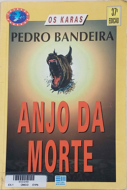

Anjo da Morte - Pedro Bandeira
Sobre o livro:
Miguel, Crânio, Calú, Chumbinho e Magrí - os cinco adolescentes que formam o grupo dos "Karas" - enfrentam problemas éticos e tomam consciência e partido em questões sociais. Suas aventuras já se consagraram no gosto do adolescente brasileiro, alimentando suas emoções justamente no momento em que o jovem está entrando na fase do domínio do pensamento reflexivo e do idealismo. O professor de teatro de Calú, o atorzinho dos Karas, é assassinado pouco antes da estréia de sua nova peça. A única pista é um ameaçador folheto neonazista. Surge um novo caso para os Karas. O principal suspeito é um ex-oficial alemão, comandante de uma organização mundial que pretende somar o dinheiro e o poder dos criminosos com o tenebroso ideal. Grande aventura dos Karas, enfrentando os perigos de um grupo neonazista e um plano ardiloso de renascer Adolph Hitler através de seu bisneto.
Imagens:
Onde Encontrar?
Estante 01, Prateleira 01, Seção B
Código do Livro
00249
Outras informações:
- Número de páginas: 142;
- Autor:Pedro Bandeira(1942-);
- Editora: Moderna